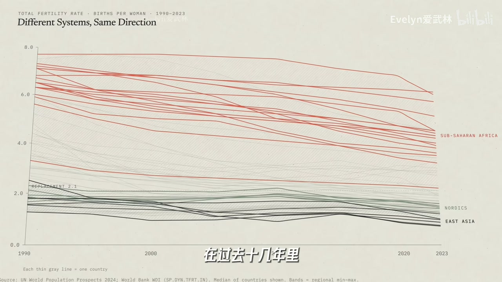
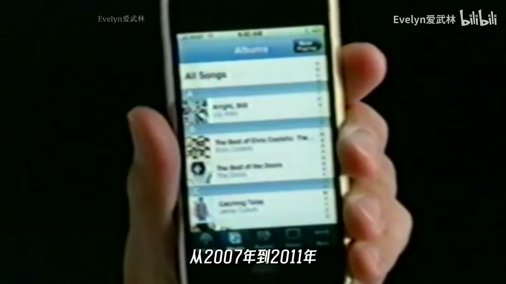

共同下行与 2007
多国生育率曲线不同步于各自经济，却在 2007 前后一起加速跌破世代更替。设问：那年发生了什么——iPhone 叙事登场。
[00:15] 钩子：手机能否像「隐形避孕药」那样改变生育？
Hook: could phones act like invisible contraception?

[01:45] OECD 等发达经济体生育中位数阴跌，多数跌破更替水平
OECD median fertility drifts down; most below replacement.
[03:00] 时间锚点对准 2007：智能手机时代开场
Timeline anchors on 2007—smartphone era begins.
摩擦消失的周末
对比昔日下楼排队买饭、偶遇聊天的社交摩擦力，与今日屏幕点外卖、少碰撞。没摩擦就难有火花；屏幕把人摁在沙发上。
[04:00] 低摩擦便利抹平偶遇与拒绝的练习场
Low-friction convenience erases chance encounters and rejection practice.

[05:30] 美国时间利用：年轻人与朋友面对面时间大幅下降，已婚比例同步走低
US time-use: face-to-face with friends plunges; marriage shares fall.
跨国证据与政策启示
用运营商覆盖差异、印度 4G 降价、非洲 2G 从 0 到覆盖等冲击，指向通信普及与生育/理想子女数下行同向。色情搜索升、性活动频率降，也在暗示替代满足。政策多在降成本，却默认深度关系已存在；真实链路是相识→约会→深度关系→生育。
[07:30] 不同国家、不同技术冲击，结果方向相似——相关而非单因定罪
Different countries/tech shocks, similar direction—correlation, not sole cause.
[09:20] 屏幕低成本反馈替代深度关系所需的等待与磨合
Cheap screen feedback substitutes for waiting and relationship friction.
[10:20] 催生若只算钱，可能漏掉「先有深度关系」这一环
Cash-only birth policies may skip the missing deep-relationship step.
小结
手机不是唯一原因，但是被低估的隐藏变量；政策与个人都要看见社交链路。